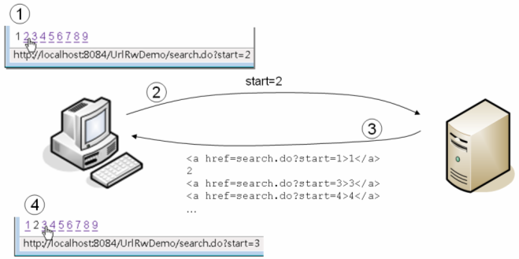

|
所謂URL重寫（URL Rewriting），其實就是GET請求參數的應用，當伺服器回應瀏覽器上一次請求時，將某些相關資訊以超鏈結方式回應給瀏覽器，超鏈結中包括請求參數資訊。例如：

在上圖中模擬搜尋某些資料的分頁結果，伺服器在回應的結果中加入了一些超鏈結，如圖中第一個標號處，按下某個超鏈結時，會一併發送start請求參數，如此Web應用程式就可以知道，接下來該顯示的是第幾頁的搜尋分頁結果。以下這個範例模擬了搜尋的分頁結果。
package cc.openhome;
import java.io.*;
import javax.servlet.*;
import javax.servlet.annotation.*;
import javax.servlet.http.*;
@WebServlet(name="Search", urlPatterns={"/search.do"})
public class Search extends HttpServlet {
@Override
protected void doGet(HttpServletRequest request,
HttpServletResponse response)
throws ServletException, IOException {
response.setContentType("text/html;charset=UTF-8");
PrintWriter out = response.getWriter();
out.println("<html>");
out.println("<head>");
out.println("<title>Servlet Search</title>");
out.println("</head>");
out.println("<body>");
String start = request.getParameter("start");
if (start == null) {
start = "1";
}
int count = Integer.parseInt(start);
int begin = 10 * count - 9;
int end = 10 * count;
out.println("第 " + begin + " 到 " + end + " 搜尋結果<br>");
out.println("<ul>");
for(int i = 1; i <= 10; i++) {
out.println("<li>搜尋結果" + i + "</li>");
}
out.println("</ul>");
for (int i = 1; i < 10; i++) {
if (i == count) {
out.println(i);
continue;
}
out.println("<a href=\"search.do?start=" +
i + "\">" + i + "</a>");
}
out.println("</body>");
out.println("</html>");
out.close();
}
}
顯然地，因為URL重寫是在超鏈結之後附加資訊的方式URL重寫，所以必須以GET方式發送請求，再加上GET本身可以攜帶的請求參數長度有限，因此大量的客戶端資訊保留，並不適合使用URL重寫。通常URL重寫是用在一些簡單的客戶端資訊保留，或者是輔助HttpSession會話管理之用。
|